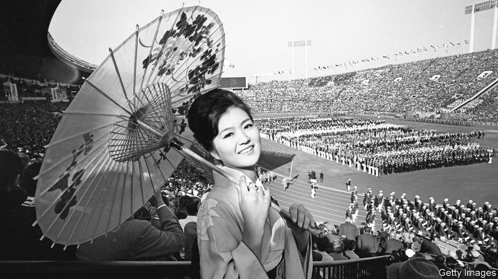

2021-07-22T16:33:54+00:00
无趣赛事
日本竭力防范奥运期间疫情恶化
它已采取多种限制措施，包括禁止观众入场及运动员间社交
当世界上最优秀的运动员每四年一次相聚在奥运会场，他们所做的远远不止奔跑、跳跃和游泳。在参加了1964年举行的上一次东京奥运会之后，澳大利亚游泳运动员道恩·弗雷泽（Dawn Fraser）出版了一本回忆录，揭开了奥运村内部隐秘生活的窗纱。“奥运村内的道德感比任何局外人所想象的都更低下。”她写道。从那以后，奥运村放荡的名声只增不减。1988年，奥运会主办方以加强艾滋病预防意识为名，开始向运动员发放避孕套；在2016年上一届里约热内卢夏季奥运会上，主办方发放了破纪录的45万只避孕套。一位前奥运滑雪运动员对美国体育杂志ESPN说，奥运村“真是个童话一样神奇的地方，就像‘爱丽丝梦游仙境’，在那里，一切皆有可能。你可以赢得金牌，也可以和非常性感的男人上床。”
在今年的奥运会上，气氛会更阴沉、乏味和圣洁。正如长达70页的防疫手册中所列明的，运动员在奥运村的生活将受到限制。他们被要求尽可能晚地抵达（在自己参加的赛事开始前五天内），并尽快离开（赛事结束后两天内）。他们必须在出发前的四天内接受两次核酸检测，结果必须呈阴性，还要在抵达日本后的检测中呈阴性。尽管预计超过80%的运动员都会接种疫苗，但他们还是要每天接受检测，一旦确诊可能会被取消比赛资格。除了睡觉、进食和比赛，其他时间都必须戴口罩，这意味着运动员即使在奥运村的健身房里锻炼时，以及如果他们能拼到最后、站上领奖台时，也必须戴着口罩。除了住处和比赛场地，他们不会被准许去其他任何地方。在奥运村的餐厅里必须迅速结束用餐，不得扎堆交际。奥运村不提供含酒精的饮料，禁止聚集饮酒或在公共场所饮酒。
活动受限的不仅仅是运动员。日本政府已经宣布东京及周边三个县的紧急状态将持续到8月22日，远远超过了奥运会结束的日期。尽管政府没有限制公众活动的权力，但其他一些限制措施会对所有庆祝活动起到抑制作用，包括要求餐馆在晚上八点后停止营业，且不提供任何含酒精的饮料，以及恳请居民避免“不必要的”外出等。
不会有人结伴聚集观赛；奥运村附近一个原本打算供粉丝狂欢的步行区将被关闭。东京市民被要求留在家中在电视屏幕上观赛。几乎所有赛事都将没有观众入场，无论是国外还是国内观众。“这会让人感到非常别扭，”东京一桥大学的坂上康博表示，“人们被告知不要出门，不要聚会，不要喝酒；孩子们的学校运动会被取消——然而一场全球性的体育赛事却正在举行。”
这样怪异的情境是疫情之下仍坚持办奥运的代价，日本政府的首席医疗顾问尾身茂称这局面“反常”。日本的疫苗接种起步缓慢，尽管之后提速，但目前也只有21%的人口完全接种了疫苗。老年人的接种率要高得多（大约75%的65岁以上东京市民至少接种了一剂疫苗），这减少了东京的死亡和重症病例。尽管如此，东京在7月14日还是新增1149例确诊病例，创1月以来的新高。传染性更强的德尔塔变异毒株的传播让医学专家感到担忧。德国杜塞尔多夫大学（University of Düsseldorf）的克里斯蒂安·塔格佐尔德（Christian Tagsold）打趣说，今年奥运会的情形让人想起上世纪80年代的另类日本漫画和动画片《阿基拉》，其中有毁灭后重建的“新东京”在2020年主办奥运会的情节。
主办方承认，要完全控制病毒是不可能的。已经有少数先期到达的运动员和官员在检测中呈阳性。日本政府转而希望避免在奥运期间爆发疫情。这将不仅需要运动员遵守规定，还包括预计5.3万名到场的官员、工作人员和媒体工作者。这5.3万人将签署“保证书”，不过如果行为失当，他们面临的惩罚相比有可能被取消比赛资格的运动员要轻些。许多人担心，与一般都会听从政府请求的日本民众相比，这些人没有那么循规蹈矩。
上周，一家分包商在一处场馆工作的四名外籍雇员被拘捕，因为他们涉嫌在远离奥运赛场的一个夜生活区吸食可卡因。这加剧了人们的担忧。不管有没有疫情，奥运会都会让一些人忍不住想要寻欢作乐。这可能是主办方今年不再在奥运村发放避孕套的原因之一。取而代之的是，运动员只有在离开日本时才会收到这份大礼包。
2021-07-22T16:33:54+00:00
No fun and games
Japan is struggling to keep covid-19 at bay at the Olympics
It has banned spectators and fraternising among athletes, among other things
WHEN THE world’s best athletes gather for the Olympics every four years, they do a lot more than run, jump and swim. In a memoir published after the previous Tokyo games, in 1964, Dawn Fraser, an Australian swimmer, pulled back the curtain on life inside the Olympic bubble. “Olympic morals are far more loose than any outsider would expect,” she wrote. The village’s reputation for debauchery has only grown since. Organisers began handing out condoms to athletes in 1988, ostensibly to raise awareness about HIV; at the last summer games in Rio de Janeiro in 2016, they handed out a record-breaking 450,000. As one former Olympic skier put it to ESPN The Magazine, an American sports publication, the Olympic village is “just a magical, fairy-tale place, like ‘Alice in Wonderland’, where everything is possible. You could win a gold medal and you can sleep with a really hot guy.”
At this year’s Olympics, the atmosphere will be gloomier, duller, chaster. For the athletes, life in the village will be circumscribed, as laid out in a 70-page book of prohibitions. They have been asked to arrive in Japan as late as possible (no earlier than five days before the start of their events) and to leave as soon as possible (within two days after their event’s end). They must present negative results in two tests taken during the four days before they leave for Japan, and another negative test result on arrival. Though more than 80% of athletes are expected to be vaccinated, they will undergo daily tests, with a confirmed case leading to possible disqualification. Masks will be mandatory except when sleeping, eating and competing, meaning that athletes will be required to wear them even while working out in the Olympic village’s gyms and, if they make it that far, while standing on the podiums to receive their medals. They will not be allowed to go anywhere except to their accommodation and competition venues. All meals must be eaten quickly and without mingling at the village’s cafeteria. Alcohol will not be served in the village, and drinking in groups or in public areas will be forbidden.
The athletes will not be the only ones on lockdown. Japan’s government has declared a state of emergency in Tokyo and three surrounding prefectures to last until August 22nd, long after the Olympics finish. The government does not have the authority to limit the public’s movements, but other restrictions will put a damper on any celebrations: restaurants are being asked to close by 8pm and not to serve any alcohol; residents are implored to avoid “non-essential” outings.
There will be no viewing parties; a promenade near the Olympic Village which had been envisioned as a raucous fan zone will be closed. Tokyoites have been asked to enjoy the games on TV from their homes. Nearly all of the events will be held without fans, foreign or domestic. “It will feel very jarring,” says Sakaue Yasuhiro of Hitotsubashi University in Tokyo: “People are being told not to go out, not to meet up, not to have drinks; kids’ sports days are being cancelled—and yet a global sporting event is going forward.”
The contortions are the price for staging the games despite the pandemic, a state of affairs the government’s main medical adviser, Omi Shigeru, has called “abnormal”. Though Japan’s vaccination campaign has picked up pace after a slow start, only 21% of the population is fully inoculated. Rates are much higher among the elderly (some 75% of Tokyoites over the age of 65 have received at least one jab), leading to a decrease in deaths and seriously ill patients in the capital. Nonetheless, Tokyo recorded 1,149 new cases on July 14th, the highest tally since January. The spread of the more infectious Delta variant worries medical experts. Christian Tagsold of the University of Düsseldorf quips that the circumstances of these Olympics bring to mind “Akira”, a cult Japanese manga and anime from the 1980s that depicts a post-apocalyptic “Neo Tokyo” hosting the Olympic games in 2020.
Organisers admit that it will be impossible to control the virus completely. A handful of athletes and officials arriving early have already tested positive. The authorities hope instead to avoid an Olympian outbreak. That will require compliance not just from athletes, but from 53,000 officials, staff and press who are expected to attend. They will be bound by a “written pledge”, but face less drastic penalties for misbehaving than the athletes, who risk disqualification. Many worry they will be less rule-abiding than the Japan ese public, which has tended to heed the government’s requests.
Those fears were amplified last week when four foreigners working for a subcontractor at a venue were arrested on suspicion of cocaine use in a nightlife district far from the Olympic facilities. Pandemic or not, the Olympics will be a temptation for some to party. That may be one reason why the organisers backtracked on plans to hand out condoms in the village this year. Instead, the athletes will receive their prophylactics only when they leave Japan. ■
2021-07-22T16:33:54+00:00
無趣賽事
日本竭力防範奧運期間疫情惡化
它已採取多種限制措施，包括禁止觀眾入場及運動員間社交
當世界上最優秀的運動員每四年一次相聚在奧運會場，他們所做的遠遠不止奔跑、跳躍和游泳。在參加了1964年舉行的上一次東京奧運會之後，澳大利亞游泳運動員道恩·弗雷澤（Dawn Fraser）出版了一本回憶錄，揭開了奧運村內部隱秘生活的窗紗。“奧運村內的道德感比任何局外人所想象的都更低下。”她寫道。從那以後，奧運村放蕩的名聲只增不減。1988年，奧運會主辦方以加強艾滋病預防意識為名，開始向運動員發放避孕套；在2016年上一屆里約熱內盧夏季奧運會上，主辦方發放了破紀錄的45萬隻避孕套。一位前奧運滑雪運動員對美國體育雜誌ESPN說，奧運村“真是個童話一樣神奇的地方，就像‘愛麗絲夢遊仙境’，在那裡，一切皆有可能。你可以贏得金牌，也可以和非常性感的男人上床。”
在今年的奧運會上，氣氛會更陰沉、乏味和聖潔。正如長達70頁的防疫手冊中所列明的，運動員在奧運村的生活將受到限制。他們被要求儘可能晚地抵達（在自己參加的賽事開始前五天內），並儘快離開（賽事結束後兩天內）。他們必須在出發前的四天內接受兩次核酸檢測，結果必須呈陰性，還要在抵達日本後的檢測中呈陰性。儘管預計超過80%的運動員都會接種疫苗，但他們還是要每天接受檢測，一旦確診可能會被取消比賽資格。除了睡覺、進食和比賽，其他時間都必須戴口罩，這意味着運動員即使在奧運村的健身房裡鍛煉時，以及如果他們能拼到最後、站上領獎台時，也必須戴着口罩。除了住處和比賽場地，他們不會被准許去其他任何地方。在奧運村的餐廳里必須迅速結束用餐，不得扎堆交際。奧運村不提供含酒精的飲料，禁止聚集飲酒或在公共場所飲酒。
活動受限的不僅僅是運動員。日本政府已經宣布東京及周邊三個縣的緊急狀態將持續到8月22日，遠遠超過了奧運會結束的日期。儘管政府沒有限制公眾活動的權力，但其他一些限制措施會對所有慶祝活動起到抑制作用，包括要求餐館在晚上八點後停止營業，且不提供任何含酒精的飲料，以及懇請居民避免“不必要的”外出等。
不會有人結伴聚集觀賽；奧運村附近一個原本打算供粉絲狂歡的步行區將被關閉。東京市民被要求留在家中在電視屏幕上觀賽。幾乎所有賽事都將沒有觀眾入場，無論是國外還是國內觀眾。“這會讓人感到非常彆扭，”東京一橋大學的坂上康博表示，“人們被告知不要出門，不要聚會，不要喝酒；孩子們的學校運動會被取消——然而一場全球性的體育賽事卻正在舉行。”
這樣怪異的情境是疫情之下仍堅持辦奧運的代價，日本政府的首席醫療顧問尾身茂稱這局面“反常”。日本的疫苗接種起步緩慢，儘管之後提速，但目前也只有21%的人口完全接種了疫苗。老年人的接種率要高得多（大約75%的65歲以上東京市民至少接種了一劑疫苗），這減少了東京的死亡和重症病例。儘管如此，東京在7月14日還是新增1149例確診病例，創1月以來的新高。傳染性更強的德爾塔變異毒株的傳播讓醫學專家感到擔憂。德國杜塞爾多夫大學（University of Düsseldorf）的克里斯蒂安·塔格佐爾德（Christian Tagsold）打趣說，今年奧運會的情形讓人想起上世紀80年代的另類日本漫畫和動畫片《阿基拉》，其中有毀滅後重建的“新東京”在2020年主辦奧運會的情節。
主辦方承認，要完全控制病毒是不可能的。已經有少數先期到達的運動員和官員在檢測中呈陽性。日本政府轉而希望避免在奧運期間爆發疫情。這將不僅需要運動員遵守規定，還包括預計5.3萬名到場的官員、工作人員和媒體工作者。這5.3萬人將簽署“保證書”，不過如果行為失當，他們面臨的懲罰相比有可能被取消比賽資格的運動員要輕些。許多人擔心，與一般都會聽從政府請求的日本民眾相比，這些人沒有那麼循規蹈矩。
上周，一家分包商在一處場館工作的四名外籍僱員被拘捕，因為他們涉嫌在遠離奧運賽場的一個夜生活區吸食可卡因。這加劇了人們的擔憂。不管有沒有疫情，奧運會都會讓一些人忍不住想要尋歡作樂。這可能是主辦方今年不再在奧運村發放避孕套的原因之一。取而代之的是，運動員只有在離開日本時才會收到這份大禮包。